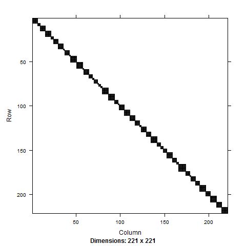
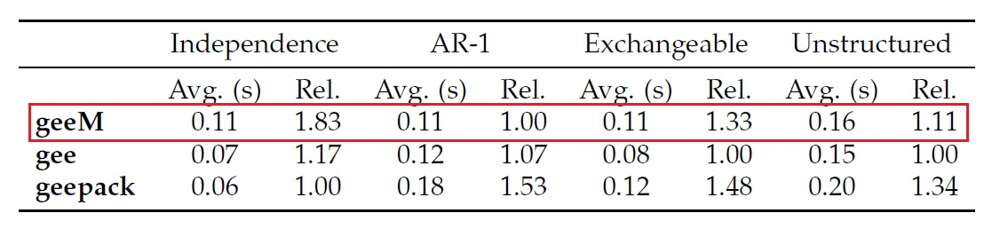
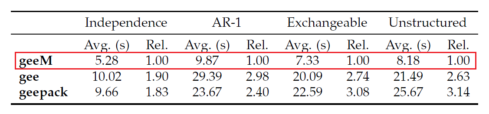
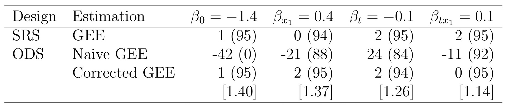
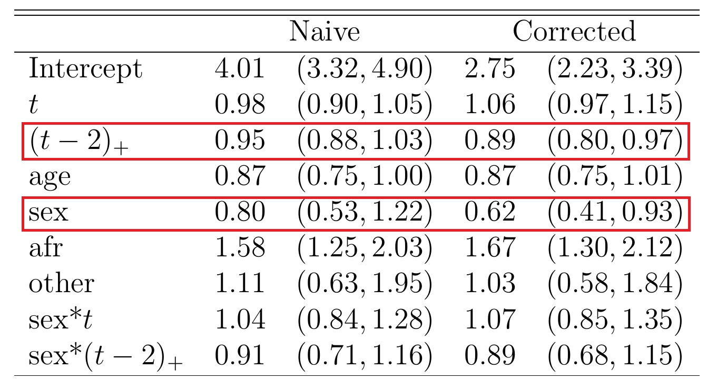

class: center, middle, gray # Sparse Matrix Computation in R with an Application to GEEs #### Lee S. McDaniel #### LSUHSC - School of Public Health ??? --- class: gray, big # Motivation - ODS * Goal: Identify risk and prognostic factors for ADHD in early childhood * Sampling: 255 subjects, about half cases/controls <div style="position:relative; left:50px"> Cases: Referred by parent or teacher <br><br> Controls: Matched demographically </div> * Followed up for 15 years (we have 8) * <b>Analyze</b> time course of hyperactivity symptom count --- class: gray, big # Estimation * Estimate $E(Y | X)$ * Use GEE to improve efficiency * In the population, use canonical link: $$ \mu_P = g^{-1}(X' \beta) $$ * In the sample, relationship is: $$ \mu_S = \int y \times dF_S (y | X) $$ --- class: gray, big, center, middle Need to fit GEEs with user-defined link functions. --- class: gray, big # What We Want * An R package <br><br> * Solve GEEs w/ user-defined link and variance functions <br><br> * Do it quickly <br><br> * Easy to modify <br><br> * Purely in R without C++ elements Created <font face="courier">geeM</font> package satisfying these criteria --- class: gray, big # Existing GEE Software <div style="position:relative; top:100px"> * SAS: GENMOD <br><br> * Stata: xtgee <br><br> * R: gee, geepack </div> --- class: gray, big # GEE Computation $$ f( y\_{it} ) = \exp \left\\{ y\_{it} \theta\_{it} - a ( \theta\_{it} ) + b(y\_{it}) \right\\}, $$ $$ \theta\_{it} = h (\eta\_{it}), \mbox{ } \eta\_{it} = x\_{it} \beta $$ Estimate $\beta$ by solving $$ \sum\_{i=1}^{K} D\_i^T V\_i^{-1} S\_i = 0 $$ Using Newton Method $$ \hat{\beta}\_{j+1} = \hat{\beta}\_{j} - \left\\{ \sum\_{i=1}^{K} D\_i^T V\_i^{-1} D\_i \right\\}^{-1} \left\\{ \sum\_{i=1}^{K} D\_i^T V\_i^{-1} S\_i \right\\} $$ --- class: gray, big # GEE Computation * $D_i$ is diagonal ($n_i \times n_i$) <br><br> * $S_i$ is a vector ($n_i \times 1$) <br><br> * $V_i = A\_i^{1/2} R\_i(\alpha) A\_i^{1/2}$ <br><br> * $A\_i$ is diagonal ($n_i \times n_i$) <br><br> * $R\_i( \alpha)$ is a working correlation matrix ($n_i \times n_i$) --- class: gray, big # GEE Computation ### Can instead write $$ \hat{\beta}\_{j+1} = \hat{\beta}\_{j} - \left\\{ D^T V^{-1} D \right\\}^{-1} \left\\{ D^T V^{-1} S \right\\} $$ * $D$ is diagonal $\left( \sum_i n_i \times \sum_i n_i \right)$ <br><br> * $S$ is a vector $\left( \sum_i n_i \times 1 \right)$ <br><br> * $V$ is block diagonal $\left( \sum_i n_i \times \sum_i n_i \right)$ --- class: gray # Sparse Matrix Storage Formal class 'dsTMatrix' with 7 slots ..@ i : int [1:5370] 0 0 1 0 1 2 ... ..@ j : int [1:5370] 0 1 1 2 2 2 ... ..@ Dim : int [1:2] 2148 2148 ..@ Dimnames:List of 2 .. ..$ : NULL .. ..$ : NULL ..@ x : num [1:5370] 1.364 -0.303 ... ..@ uplo : chr "U" ..@ factors : list() --- class: gray, big # A Crazy Example Add $I\_{10,000}$ to itself: m1 <- diag(10000) system.time(for(i in 1:100) m1+m1) object_size(m1) Result: a leisurely 34.08s and bloated 800MB library(Matrix) M1 <- Diagonal(10000) system.time(for(i in 1:100) M1+M1) object_size(M1) Result: a swift 0.05s and dainty 1.14kB --- class: gray, big # Creating Sparse Matrices sparseMatrix(i, j, x, symmetric=FALSE) * <font face="courier">i</font> is vector of row indices <br><br> * <font face="courier">j</font> is vector of column indices <br><br> * <font face="courier">x</font> is vector of contents <br><br> * <font face="courier">symmetric=TRUE</font> if the matrix is symmetric <center><b>And that's it</b></center> --- # Anatomy of a Correlation Matrix <center></center> ??? - 50 subjects - 1 to 8 observations per subject --- class: gray, big # Anatomy of a Correlation Matrix * Typically Sparse <br><br> * Block Diagonal <br><br> * Similarly-sized blocks are identical <br><br> <center><b>Don't even need to invert entire matrix!</b> </center> --- class: gray, big # Inverting a Correlation Matrix * Assume $b$ different-sized blocks <br><br> * Build $b$ matrices <br><br> * Invert each of them <br><br> * Build the block diagonal matrix --- class: gray # Special Case: AR-1 <div style="position:relative; left:0px"> Correlation Matrix is defined by </div> $$ R(\alpha) = \left(\alpha^{|t-t'|} \right) $$ Then $$ R(\alpha)^{-1} = \frac{1}{1-\alpha^2} \begin{bmatrix} 1 & -\alpha & 0 & 0 & \cdots 0 & 0 \\\ -\alpha & 1 + \alpha^2 & -\alpha & 0 & \cdots & 0 & 0 \\\ 0 & -\alpha & 1+\alpha^2 & -\alpha & \cdots & 0 & 0 \\\ \vdots & \vdots & \vdots & \vdots & \vdots & \vdots & \vdots \\\ 0 & 0 & 0 & 0 & \cdots & 1 + \alpha^2 & -\alpha \\\ 0 & 0 & 0 & 0 & \cdots & -\alpha & 1 \end{bmatrix} $$ Or $$ R(\alpha)^{-1} = \frac{1}{1-\alpha^2} \left\\{ L - \alpha M + (1+\alpha^2) N \right\\} $$ --- class: gray, big # For Example: ohio Data Set in geepack * Part of the Six City Study <br><br> * 537 children in Steubenville, Ohio <br><br> * Aged 7-10 years <br><br> * Followed for 4 years each <br><br> * Wheezing status is response (binary) <br><br> * Age, maternal smoking are predictors <br><br> * Full correlation matrix is 2148x2148 <br><br> --- class: gray # Three Methods of Inversion ### First: invert sparse block matrix user system elapsed 0.046 0.000 0.046 ### Second: loop through and invert user system elapsed 0.028 0.000 0.028 ### Third: invert 4x4 matrix and build user system elapsed 0.016 0.000 0.016 ??? Second and third scale linearly First one does not scale in a friendly fashion --- class: gray # The Matrix Multiplication $$ \sum_{i=1}^K D_i^T V_i^{-1} S_i $$ ### Using the block diagonal: user system elapsed 0.084 0.000 0.084 ### Looping through subjects: user system elapsed 0.772 0.000 0.777 <b><center>This multiplication happens about 10 times</center></b> --- class: gray, big # A Larger Example: Birth Data * Mothers with 2 or 3 children <br><br> * 141,929 clusters <br><br> * Response is gestational age at birth <br><br> * Predictor is mother's age <br><br> * 296,218 observations --- class: gray # Matrix Inversion ### First: invert sparse block matrix user system elapsed A really long time ### Second: loop through subjects and invert user system elapsed 7.99 0.00 7.99 ### Third: invert 2x2 and 3x3 matrices and build user system elapsed 1.82 0.04 1.86 --- class: big, gray # The Matrix Multiplication ### Using the block diagonal: user system elapsed 0.198 0.008 0.206 ### Looping through subjects: user system elapsed 302.45 0.02 303.24 --- class: big, gray # Other R GEE Solvers ### R package <FONT FACE="courier">gee</FONT> * A basic solver * Based on C * Link and variance functions limited ### R package <FONT FACE="courier">geepack</FONT> * Regression models for scale and correlation parameters * <font face="courier">glm</font>-like interface * Based on C * Link and variance functions limited --- class: image # Speed Comparison: Ohio Data <div style="position:relative; top:100px"> <center></img></center> </div> --- class: image # Speed Comparison: Birth Data <div style="position:relative; top:100px"> <center></img></center> </div> --- class: gray # Changing the Link Function linkfun <- qcauchy linkinv <- pcauchy mu.eta <- dcauchy variance <- function(p){p*(1-p)} FunList <- list(linkfun, variance, linkinv, mu.eta) geem(resp~age*smoke, id=id, data=ohio, family=FunList, corstr="exch") <b><center>Flexibility!</center></b> --- class: gray # Changing the Link Function <div style="position:relative; left:0px"> Logit Link </div> Inter age smoke age:smoke -1.9 -0.14 0.31 0.071 (0.12) (0.058) (0.19) (0.088) <div style="position:relative; left:0px"> Probit Link </div> Inter age smoke age:smoke -1.1 -0.077 0.17 0.037 (0.063) (0.031) (0.10) (0.049) <div style="position:relative; left:0px"> Cauchit Link </div> Inter age smoke age:smoke -2.3 -0.28 0.63 0.18 (0.27) (0.13) (0.37) (0.17) --- class: big, gray, middle, center # Back to the ADHD Example --- class: big, gray # A Further Complication ### Inverse link is defined by: $$ \mu_S = \int y \times dF_S (y | X) $$ ### Q: What's the link function? ### A: It doesn't matter. <center>Instead of using the mean, use the linear predictor</center> --- class: gray # The Inverse Link linkinv <- function(eta){ ymat <- matrix(rep(y,nobs),nrow=nobs,byrow=T) etaymat <- apply(ymat, 2, "*", eta) reference <- -lfactorial(matrix(rep(y, nobs), nrow=nobs, byrow=T)) exp(etaymat+reference+log(rho.y))%*%support } And, if you're curious linkfun <- identity --- class: gray, big # ODS Simulations * Response is marginally poisson with link $$ \log \mu_P = -1.4 + 0.4X_1 - 0.1t + 0.1X_1 t $$ * $X_1$ is binary <br><br> * $t = 0, \ldots, 7$ <br><br> * Responses have an AR-1 correlation with $\alpha = 0.9$.<br><br> * If $Y_{i1} = 0$, probability of being sampled is $0.041$ <br><br> * If $Y_{i1} > 0$, probability of being sampled is $0.959$ --- class: image # Simulated Results of ODS <div style="position:relative; top:100px"> <center></img></center> <center>Percent Bias (Coverage Probability) [Efficiency Relative to SRS]</center> </div> --- class: image #Results from ADHD Study <div style="position:relative; top:25px"> <center></img></center> <center>Exponentiated Estimate (Confidence Interval). CI containing 1 indicates not significant.</center> </div> --- class: gray # References <div style="position:relative; left:0px; top:20px">L. S. McDaniel, N. C. Henderson, and P. J. Rathouz. Fast Pure R Implementation of GEE: Application of the Matrix Package. The R Journal, 5(1):181-188, June 2013.</div> <br> <div style="position:relative; left:0px">Schildcrout, J. S. and Rathouz, P. J. (2010). Longitudinal Studies of Binary Response Data Following Case-Control and Stratified Case-Control Sampling: Design and Analysis. Biometrics, 66(2):365-373.</div>